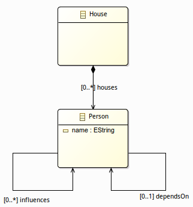
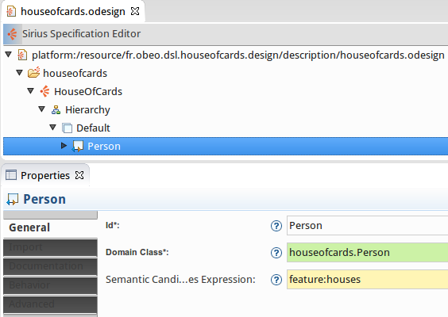
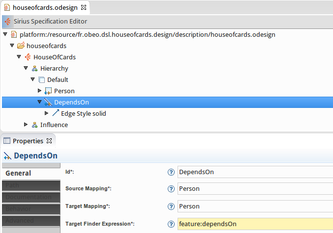
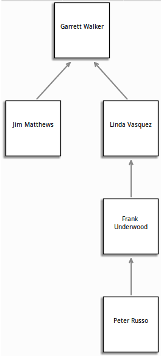
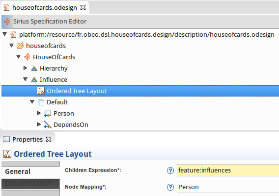
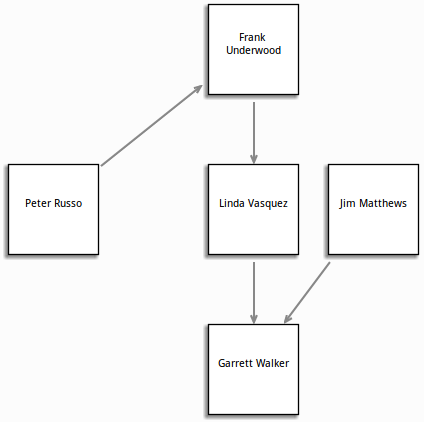

One recurrent problem when you are developing a graphical modeler is to provide a good layout. What’s great with Sirius is that it helps you by providing a default layout algorithm. This default algorithm performs an automatic layout of all the elements available on a diagram.
To show up the Sirius layout possibilities, imagine that we want to visualize the characters' hierarchy of the House Of Cards serie. So we define the following metamodel :

First step, we created with Sirius a diagram to represent the Persons.

All the persons are represented thanks to a white square with their names.
We got a flat diagram, every persons are exactly on the same level. By default, the nodes are lay out by Sirius from left to right.
What we want to see is the organizational hierarchy of the White House, so we need to represent the subordination link. This link is modelized by the dependsOn reference in the metamodel.
So we just need to define a new relation based edge mapping. This edge will connect Persons and to find the subordinate we just need to go through the dependsOn reference.

Automatically the default layout will present an ordered tree with at the top, the person who is upper in the White House hierarchy, in our example the president Garrett Walker and at the bottom the Congressman Peter Russo. When you define a relational base edge, Sirius will automatically lay out the elements as an ordered tree by using the reference to find the children.

That’s looks good but imagine that we want to see the subordination link but we want to order our nodes thanks to another relation. In our metamodel we added another reference influences which will represent the influence that a person could have on another one. So we need to create another kind of diagram where we want to see the more influencing person at the top and the most influenced at the bottom. But we still want to represent the subordinate link between the persons.
Good news for you that’s really easy to implement thanks to Sirius.
If the default algorithm does not fit your needs, you can configure some parameters or request for alternate algorithms directly inside the Sirius specification editor.
Thus, you can define :
These layout algorithms manage only nodes connected by edges, other nodes are lay out from left to right as usual.
The Ordered Tree Layout is especially interesting for us.
We defined a new Influence diagram, with a Person mapping and a DependsOn mapping. These mappings are exactly the same as before in the Hierarchy diagram. The only difference is that we provided an Ordered Tree Layout.

The Children Expression is used to specify the manner to retrieve children for each node. In our example we will use the influences reference to go through the model.
The Node Mapping must specify the mapping on which the tree order algorithm will operate. For our example, we want the algorithm to operate on Person.
And tadaaa! Just by defining this new layout we are now able to see that the one who’s influencing every other protagonists is Frank Underwood, but Shh! that’s a secret ;)

Last thing, if you need to go beyond that, it is also possible to provide your own layout algorithm programmatically.